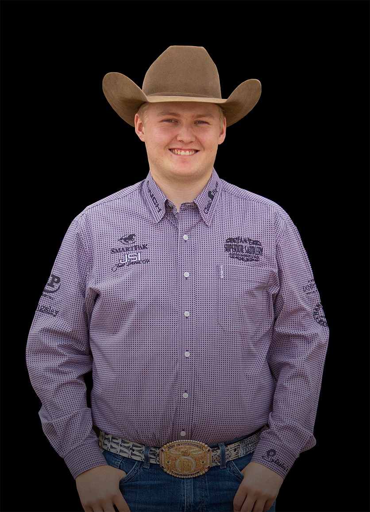

NRHA $3M Rider | Youngest NRHA Futurity Champion | WEG Bronze Medalist
Born into reining royalty — his father Tom is an NRHA $2 Million Dollar Rider and WEG Individual Gold Medalist; his mother Mandy is an NRHA Hall of Famer and the only $3 Million Dollar Non Pro in history; his grandfather Tim McQuay is one of the most celebrated trainers the sport has produced — Cade McCutcheon could have coasted on the family name. Instead, he became a record-breaker in his own right.
He made his reining debut at age 7 in a short stirrup class. By 10 he was in his first NRHA Non Pro Futurity. At 18, he became the youngest U.S. rider in reining to compete at the World Equestrian Games — the 2018 WEG in Tryon, North Carolina, where he rode Tim and Colleen McQuay's Custom Made Gun to an individual Bronze Medal and was part of Team USA's Gold Medal squad.
In 2019, at just 19 years old, Cade turned professional — and immediately rewrote the record books. He won the NRHA Level 4 Open Futurity Championship aboard Super Marioo, becoming the youngest NRHA Open Futurity Champion in history. He also won the Reserve Championship that same night. And simultaneously, the combined earnings from that single show pushed him over $1 million in career NRHA earnings — making him the youngest NRHA Million Dollar Rider in the association's history.
He did not slow down. By 2023, he had surpassed $2 million — again the youngest rider to reach that milestone — on the strength of a third-place Futurity run aboard All Nite Partier. In 2024, he won the NRHA Derby Championship with All Nite Partier, adding the sport's second-most prestigious title to his collection. In 2025, he crossed $3 million at the Run For A Million in Las Vegas.
McCutcheon was also part of the inaugural 2019 Run For A Million Invitational Co-Championship — sharing the title with Craig Schmersal in the highest-stakes event in reining history. He has been a fixture in that elite field every year since, and at The American Performance Horseman he has repeatedly placed among the top finishers in reining's crossover grand prix events.
His connection to the Yellowstone television universe — the McCutcheon ranch appeared in a reining scene filmed for Taylor Sheridan's show — brought his family's story to an audience well beyond the reining world. The authenticity of what they represent resonated.
Cade McCutcheon is not a story of inherited greatness. He is the story of someone born with every advantage who worked hard enough to deserve them. The dynasty continues.
Cade McCutcheon rides Superior Saddles by Andy Mashke. His signature Cade McCutcheon Reiner in the Superior lineup features a glass-encased wood tree with 15"–16.5" seat sizes, dropped-D rigging, and sterling overlay trim — a saddle built for the next generation of reining's elite.
View Superior Saddles Lineup →